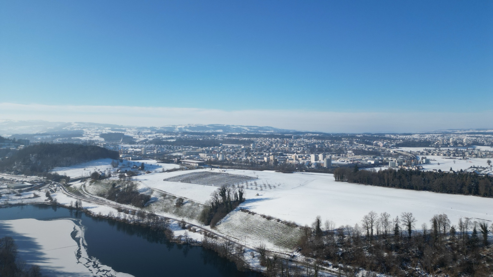
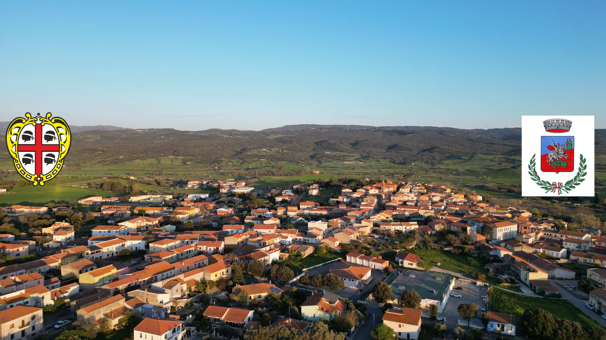
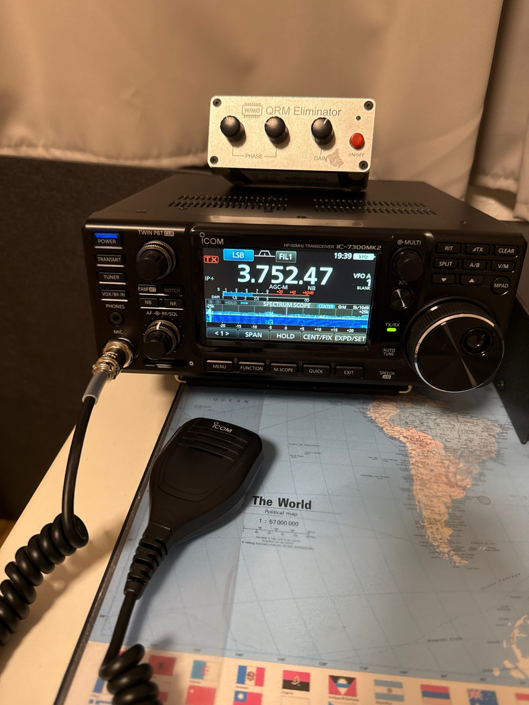

SCHWEIZ01 / EIGENE INSTANZ

LuzernCH
Die Schweizer Perspektive auf Kurzwelle. Der Web-Empfänger von HB3XDC in Luzern ist dein Ausgangspunkt für eine Entdeckungsreise durchs Band.
- Plattform
- UberSDR
- Standort
- Luzern, Schweiz
Dein Einstieg. Dein Experiment. Dein nächstes QSO.
Empfange die Welt, verstehe die Technik und baue dein Wissen aus — mit HB3XDC.
Wähle deinen Empfangsort. Vergleiche dieselbe Frequenz an beiden Standorten und erlebe, wie sehr der Standort den Empfang verändert.

Die Schweizer Perspektive auf Kurzwelle. Der Web-Empfänger von HB3XDC in Luzern ist dein Ausgangspunkt für eine Entdeckungsreise durchs Band.

Ein zweiter Blick aufs gleiche Signal. In Sas Tanchittas bei Perfugas, im Norden Sardiniens, ergänzt dieser Empfänger die Station in Luzern.
Die Links öffnen externe Empfänger in einem neuen Tab. Audio startest du dort selbst. Es wird hier kein Live-Status gemessen; Frequenzbereich, Antennen und aktivierte Funktionen richten sich nach der jeweiligen Instanz.
Ein Web-SDR ist ein über den Browser bedienbarer Funkempfänger an einem anderen Standort. SDR bedeutet Software Defined Radio: Software übernimmt einen grossen Teil der Signalverarbeitung. HB3XDC nutzt für Luzern und Perfugas UberSDR. Weitere Plattformen sind KiwiSDR, die WebSDR-Software von PA3FWM sowie NovaSDR und PhantomSDR.
Empfang über das Internet.
Kein Senden über diese Webseite.
Mehrere Nutzer können gleichzeitig unterschiedliche Frequenzen hören. Du steuerst deinen eigenen Empfang.
Spektrum und Wasserfall helfen, Aktivität zu finden. Wähle Frequenz, Betriebsart und passende Bandbreite.
Programme wie UberSDR bieten digitale Decoder, Rauschminderung und Schnittstellen für externe Software. Was verfügbar ist, hängt von der Einrichtung ab.
Mit Multi-Monitor und Smart Listen unterstützt UberSDR den Empfang über mehrere Instanzen. Das schafft neue Perspektiven auf dasselbe Signal.
Keine eigene Funkhardware nötig.
Ein Browser und Kopfhörer reichen für den Einstieg.
Luzern oder Sardinien wählen und auf der Empfängerseite den Audiostart bestätigen.
Im Wasserfall nach Signalen schauen. Für Sprechfunk auf 40 m ist LSB üblich, auf 20 m USB.
Abstimmung und Filter anpassen. Dann dieselbe Frequenz am zweiten Standort vergleichen.
Ein wachsendes Praxislexikon für neugierige Funkmenschen. Von der ersten Spannung bis zum digitalen Kontakt: Wähle ein Thema, rechne nach und probiere es am Empfänger aus.
Alle Kapitel lesen oder drucken ↗
Das Lexikon wird geladen. JavaScript aktiviert die Suche und Kapitelansicht.

HEIMSTATION LUZERN / FOTO HB3XDCAmateurfunk verbindet Neugier, Technik und das Experiment. Neben den beiden Web-Empfängern gehört auch die Heimstation in Luzern zu meinem Funkprojekt.
Für 2 m und 70 cm nutze ich ausserdem einen Yaesu FT-991A mit einer Diamond X50-NA. Damit gehört auch der lokale und regionale Funkverkehr zu meiner Station.
Repeater in deiner Nähe finden ↗ · Schweizer Sprachrelais bei der USKA ↗
Meine Stationen, meine Antennen und die Orte dahinter. Klicke auf ein Foto für die grosse Ansicht. Fotos: HB3XDC.
Aufbauen, ausprobieren, verstehen. Anleitungen, Experimente und Projekte aus der Amateurfunkwelt.
Signale verstehen, Ausbreitung beobachten, Neues ausprobieren. Eine kleine Werkzeugkiste für grosse Entdeckungen.
Funktechnik, Vereinsleben und Ausbildung in der Region Luzern.
EMPFANG & COMMUNITY ↗Schweizer SDR-Angebot entdecken.
PLANUNG & WERKZEUGE ↗Standorte, Koordinaten und Locator auf einer interaktiven Karte finden.
PLANUNG & WERKZEUGE ↗Stehwellenverhältnis und Reflexion ergänzend durchrechnen.
PLANUNG & WERKZEUGE ↗Weiteres Werkzeug für die Planung einer Luftspule.
PLANUNG & WERKZEUGE ↗Externes Modell für kleine Sendeschleifen. Verluste und Geometrie beeinflussen reale Ergebnisse stark.
PLANUNG & WERKZEUGE ↗Ringkern- und Übersetzungsrechnungen als Einstieg in die Planung.
REGION & REPEATER ↗Die USKA-Sektion Zug: Vereinsleben, Technik und Notfunk in der Region.
REGION & REPEATER ↗Funkamateure, Relaisinfrastruktur und Notfunk in der Zentralschweiz.
REGION & REPEATER ↗Schweizer Sprachrelais: Frequenzen, Betriebsarten und Zugangstöne bei der USKA nachschlagen.
REGION & REPEATER ↗2-m- und 70-cm-Relais in deiner Nähe auf der Karte suchen. Details vor dem Programmieren mit dem Betreiber abgleichen.
DIGITAL & WERKZEUGE ↗Offene digitale Sprache auf Kurzwelle: Software, Einstiegshilfe und Projektinformationen.
DIGITAL & WERKZEUGE ↗Funkwelt-Toolbox mit Antennen-, Anpassungs- und Stationsrechnern zum Weiterexperimentieren.
DX & AKTIVITÄT ↗DX-Cluster mit Filtern und Bandaktivität: interessante Stationen und aktuelle Spots finden.
DX & AKTIVITÄT ↗QSO- und Empfangsmeldungen auf Karten verfolgen – von Kurzwelle bis VHF und höher.
LERNEN & MEDIEN ↗Fachmagazin mit Nachrichten, Elektronikprojekten und Beiträgen zur Amateurfunkpraxis.
LERNEN & MEDIEN ↗Lernplattform für die deutschen Amateurfunkklassen N, E und A. Auch zum Vertiefen technischer Grundlagen.
WETTER & BLITZE ↗Blitzaktivität auf einer Karte beobachten und zeitlich mit Gewitterrauschen vergleichen.
SATELLITEN ↗Informationen und Praxisthemen rund um Satelliten und deren Empfang.
DX & AKTIVITÄT ↗Angekündigte DX-Aktivitäten mit Zeiträumen, Rufzeichen und weiterführenden Angaben.
EMPFANG & PROJEKTE ↗UberSDR, NovaSDR und weitere Empfangsorte auf einer gemeinsamen Karte.
EMPFANG & PROJEKTE ↗SDR-Nachrichten, Bastelprojekte und praktische Empfangsideen.
EMPFANG & PROJEKTE ↗Öffentliche Kiwi-Empfänger entdecken und Standorte vergleichen.
EMPFANG & PROJEKTE ↗Das Verzeichnis für klassische WebSDR-Empfänger.
01 / EMPFANGSMELDUNGEN ↗Wo werden digitale Signale gehört? Empfangsmeldungen helfen, Ausbreitung und Reichweite einzuordnen.
02 / SPOTS ↗Automatische Empfangsstationen melden gehörte Rufzeichen. Spannend zum Beobachten von Bandöffnungen.
03 / PLANUNG ↗Kurzwellenverbindungen modellieren: Standorte, Antennen und Uhrzeit vergleichen. Eine Prognose, keine Empfangsgarantie.
04 / DIGITALE BETRIEBSARTEN ↗Das offizielle Projekt für digitale Schwachsignalverfahren. Dokumentation und Downloads direkt beim Entwicklerprojekt.
05 / PLATTFORM ↗Das Originalprojekt kennenlernen, die Dokumentation lesen und aktuelle Software entdecken.
06 / ENTDECKEN ↗Andere öffentliche Empfänger finden und die Empfangsperspektive wechseln.
WEITERLERNEN ↗Antennen am Rechner modellieren: Geometrie, Impedanz und Richtdiagramm untersuchen.
WEITERLERNEN ↗Morsezeichen hören und systematisch üben – direkt im Browser.
WEITERLERNEN ↗Englischsprachige Lernangebote des britischen Amateurfunkverbands.
WEITERLERNEN ↗Messprodukte und Warnungen im Zusammenhang mit Funkkommunikation lesen.
Ein regionaler Einstieg in die Amateurfunkwelt: Auf hb9lu.ch findest du Beiträge zu Funktechnik, Veranstaltungen und Kursangeboten. Eine gute Adresse zum Weiterlernen und Vernetzen.
HB9LU besuchen ↗Die Union Schweizerischer Kurzwellen-Amateure ist der nationale Amateurfunkverband. Ihre Webseite führt zu Ausbildung, Veranstaltungen und Themen rund um den Funkbetrieb in der Schweiz.
Zur USKA ↗Wolfgang HB9RYZ betreibt ein unabhängiges Stationsprojekt auf der Rigi Scheidegg. Entdecke seinen Web-Empfänger und erfahre mehr über die Technik und den Standort auf seiner Projektseite.
Mein Kollege HB3XVQ bietet mit dem SDR in Podravina, Kroatien, und der WebSDR-Farm in Nürnberg weitere Empfangsorte zum Entdecken. Vergleiche dasselbe Signal bei gleicher Betriebsart und Filterbreite – lokale Störungen und Ausbreitung können den Unterschied hörbar machen.
Eigenständige Projekte von HB3XVQ; keine Stationen von HB3XDC.
Sechs praktische Prüfungen für Betrieb und Fehlersuche an deiner Station.
Miss die Spannung am Netzteil und direkt an den Geräteklemmen bei derselben Sendelast. Eine deutliche Differenz weist auf Verluste in Kabeln, Steckern oder Sicherungen hin. Der DC-Rechner im Funklabor hilft beim Einordnen.
Vergleiche ein schwaches Signal mit und ohne Vorverstärker bei gleicher Bandbreite. Entscheidend ist die Verständlichkeit gegenüber dem Rauschen, nicht ein höherer S-Meter-Ausschlag. Bei starken Nachbarsignalen auch den Abschwächer testen.
Windows-Klangverbesserungen ausschalten und den Audiopegel schrittweise einstellen. Die Anzeige im Funkgerät und die Hinweise des jeweiligen Modems beachten. Mehr Audiopegel bringt bei Übersteuerung keine bessere Verbindung.
SWR-Kurven am gleichen Messpunkt und mit demselben Kabel aufnehmen. Frequenzbereich, Aufbau und Wetter notieren. Eine kleine SWR-Zahl allein belegt weder guten Wirkungsgrad noch Resonanz: auch Widerstand und Blindanteil betrachten.
Vor dem ersten Anruf Empfangsfrequenz, Senderablage, Betriebsart und gegebenenfalls CTCSS anhand der aktuellen Relaisliste einstellen. Erst zuhören, dann kurz mit Rufzeichen rufen und eine Antwortpause lassen.
Ausgangseinstellungen notieren. Nur einen Regler oder ein Bauteil ändern und unmittelbar vergleichen. Bei wechselnder Ausbreitung mehrere kurze A/B-Versuche machen; sonst wirkt ein Bandwechsel leicht wie eine technische Verbesserung.
Diese Webseite ist der Einstieg. Die beiden verlinkten UberSDR-Instanzen stellen den tatsächlichen Empfang bereit. Die Fotos zeigen unsere Funkpraxis; die technische Ausbreitungsillustration ist ein Lernmodell und zeigt keine Live-Daten.
Ausbreitung, Tageszeit, lokale Störungen und Antenneneigenschaften beeinflussen den Empfang. Ein Vergleich ist besonders aussagekräftig, wenn Frequenz und Betriebsart an beiden Empfängern übereinstimmen.
Auf der Empfängerseite Audio bewusst starten und Lautstärke, Browserfreigabe, Betriebsart und Filter prüfen. Ist die Instanz nicht erreichbar, später erneut versuchen oder den anderen Standort öffnen.
Die Stationsfotos zeigen meine eigene Funkpraxis. Screenshots und externe Darstellungen sind beim jeweiligen Beitrag gekennzeichnet. Sie zeigen die eigene Funkpraxis und werden durch selbst erstellte technische Illustrationen ergänzt. Quellen und Prüfgrenzen sind unten dokumentiert.